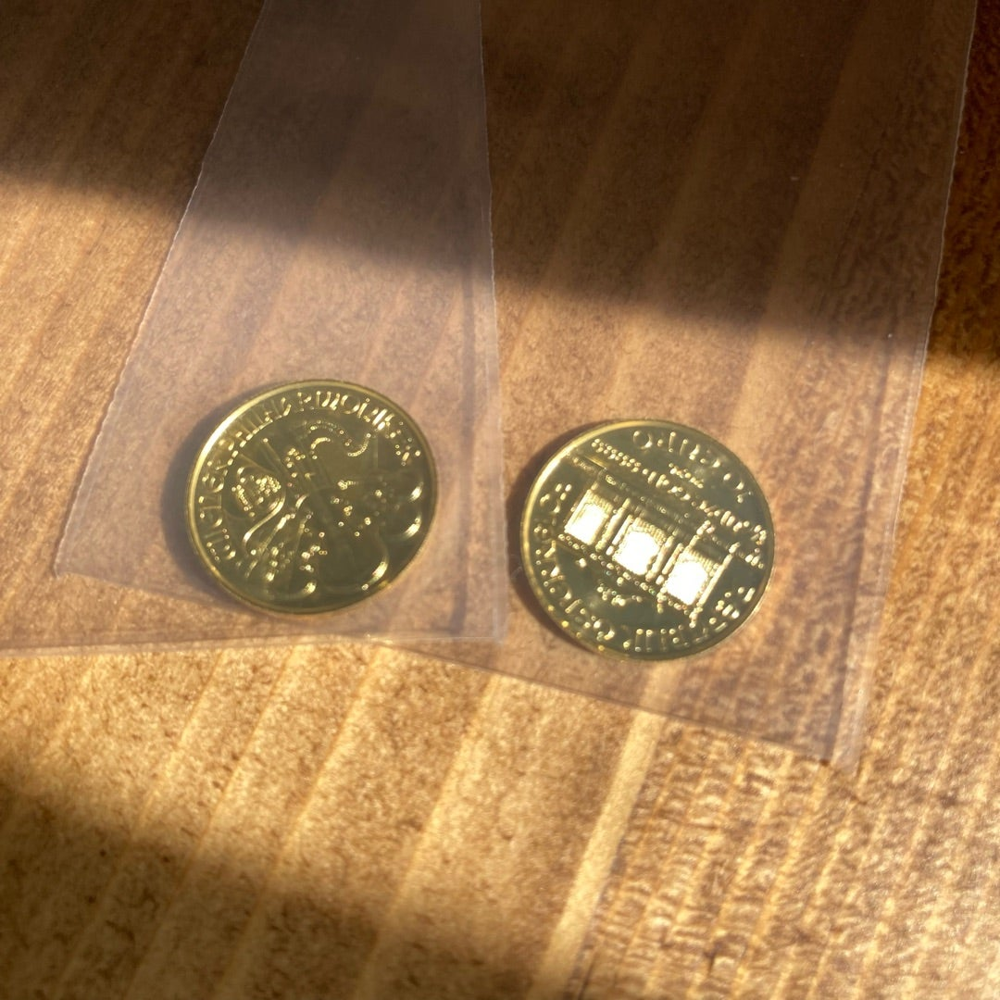
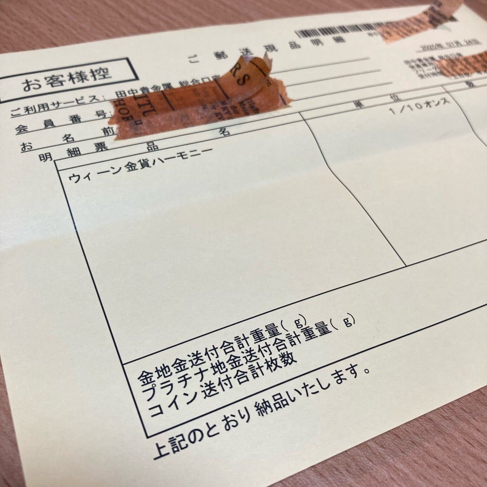

失敗しない純金積立 3社比較記録
実際に3社使ってみた、管理者の感想です。
なぜゴールド投資を始めたのか
- 株でリスクを取っているので、別の資産に分散したかった
- 現物資産として「キラキラの金」を所有してみたかった（これが一番の理由）
- 「株は怖いけどゴールドなら安全」という家人の希望があった
- まとまった資金がなくても始められる「積立」が自分に合っていた
実録！3社徹底比較表
※手数料や最低金額はこぞう調べ（2026年時点）
| 項目 | SBI証券 | 田中貴金属 | 三菱マテリアル |
|---|---|---|---|
| 最低積立金額 | 1,000円〜 | 3,000円〜 | 3,000円〜 |
| 買付手数料 | 1.65% | 2.8% | 2.6%〜3.1% |
| 現物交換 | 1kg〜（バー） | コイン・バー | コイン・バー |
| 特典・CP | なし | QUOカード | QUOカード |
| サイトの使い勝手 | 普通 | 最高に見やすい | 普通 |
こぞうの乗り換え体験談
以前、世の中で「金が不足して現物交換しにくい」というアナウンスが流れた際、危機感を感じて「今のうちに交換できる分だけ交換してしまおう！」と動きました。その際、積み立てた分を現物と現金で受け取り、三菱マテリアルへ乗り換えたのですが……。
結論：乗り換える必要はなかったかな（笑）
結局、三菱マテリアルでも交換しにくい状況は同じでした。ただ、田中貴金属のサイトの使いやすさは今でも魅力的だと思っています。現在は三菱マテリアルでどっしり腰を据えて継続中です。
ウィーン金貨ハーモニー（1/10オンス金貨） 現物交換の記録

田中貴金属で交換した1/10オンスウィーン金貨ハーモニー。
指紋をつけたくないので、袋に入れたまま大切にしています。

交換時の明細書。個人情報を伏せて記録。
手に取った時のズッシリ感は感動モノでした！
厳重すぎる？受け取りの儀式
金貨の受け取りは、普通の宅配便ではありませんでした。 「本人限定受取郵便」という、最もセキュリティが高い方法で届きます。
- 郵便局から「通知の封書」が自宅に届く
- 受け取りたい郵便局の窓口を指定する
- 身分証明書を持って、指定の郵便局へ出向く
- 厳重な本人確認を経て、ついに金貨と対面！
キラキラの1/10オンスウィーン金貨ハーモニーをついに手に入れました！うれしい。
投資用金貨（地金型金貨）として世界的に信頼されています。24金（純度99.99%以上）
表側にはパイプオルガン（楽友協会大ホールにあるもの）、裏側にはウィーン・フィルの管弦楽器（バイオリン、ハープ、ホルン）が描かれています。
使うことはおすすめしませんが、10ユーロとしても実は使えます（笑）